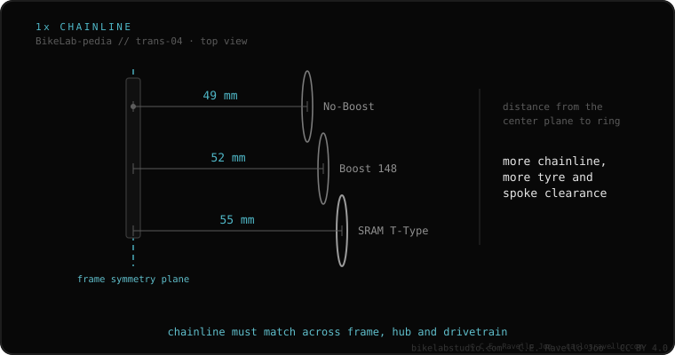

Chainline is the distance, in millimeters, from the frame centerline to the center of the chainring (or cassette). Keeping chainring and cassette well aligned is what prevents noise, wear and dropped chains, especially on 1x. Standard values depend on rear hub width: 49 mm on non-Boost frames, 52 mm on Boost (148 mm axle) and 55 mm on the SRAM T-Type system. If your chainring doesn't respect the right line, the chain rubs or drops.
It's the invisible measurement that decides whether your drivetrain runs silent or rattles. And almost nobody checks it before swapping a chainring or crank.
The chain works best the straighter it runs between chainring and cog. On 2x the effort is shared; on 1x, with a single ring and a huge cassette, a bad line means constant noise and skips. The line isn't changed with longer cranks: it's set by the chainring offset, i.e. how far the ring sits inboard or outboard of the crank arm.

The chainring offset must match your frame's rear axle width. A chainring meant for a 49 mm line on a Boost frame (52 mm) leaves the chain too far inboard: it rubs the chainstays and drops. Before buying a chainring or crank, confirm whether your frame is Boost, non-Boost or T-Type.
If you're unsure which cassette, freehub or chain fits your bike, send us the case. Real diagnosis, nothing to sell you. Message us on WhatsApp
Measure from the seat-tube center to the center of the chainring teeth and add half the tube diameter. Typical: 49 mm non-Boost, 52 mm Boost.
For most direct-mount cranks on a Boost frame (148 mm), a chainring with 3 mm inboard offset gives the standard 52 mm.
No, just different. Each standard (49/52/55) matches a hub width; what matters is that chainring and cassette agree.